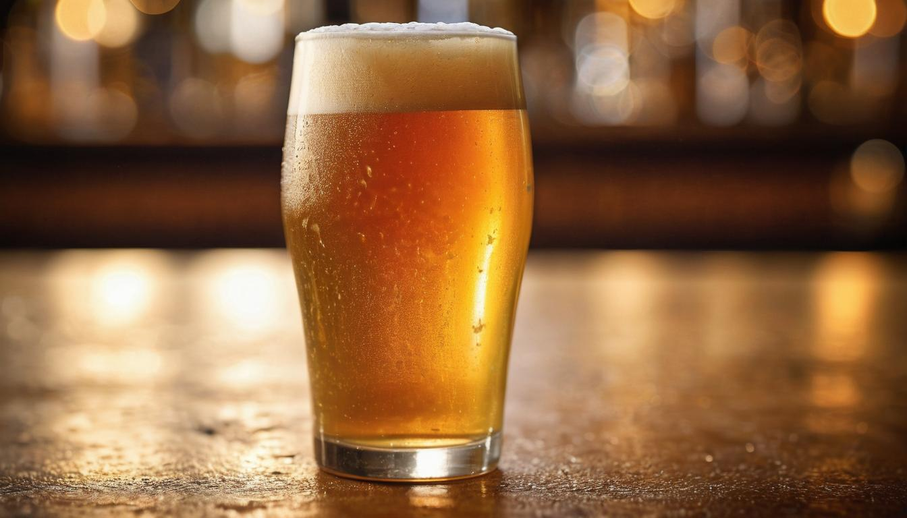
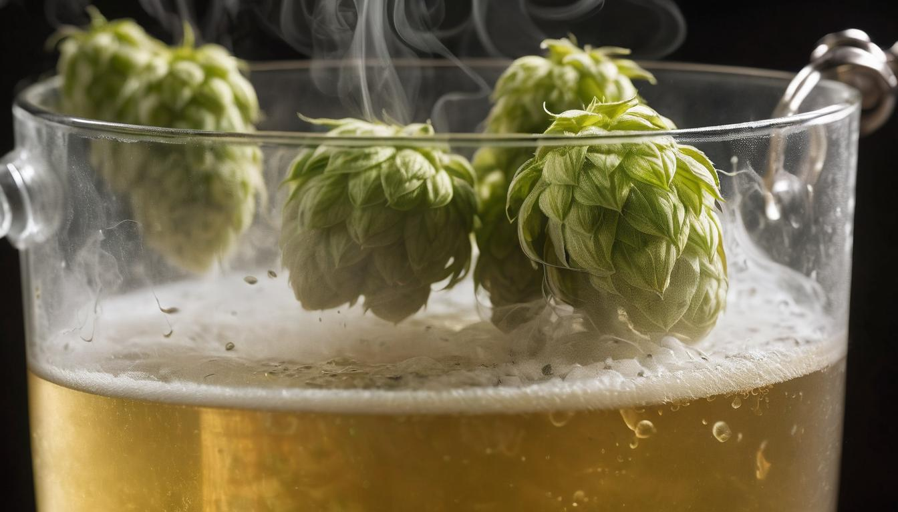
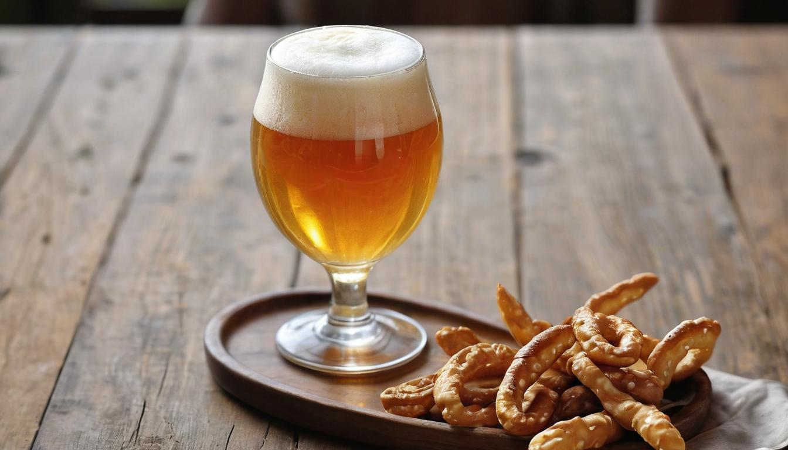

Pale Ales and Styles
Brewing the perfect Pale Ale at home can feel like chasing an elusive dream - one moment it seems close enough to taste, the next it's slipping through your fingers due to an unexpected mishap in the brewing process. Yet, the satisfaction of pouring that first glass of successfully brewed beer keeps many enthusiasts, like yourself, coming back to try again. Understanding each step of the journey not only makes a difference but also reignites that initial spark of passion for craft beer.
This detailed guide has been meticulously researched to provide you with clear and actionable insights for brewing and tasting Pale Ale. From selecting the right ingredients to avoiding common pitfalls, every aspect has been covered with precision to help you move from frustrated amateur to confident brewer. So before we dive headfirst into techniques and tips that have been honed by experts, let's start by exploring what defines a Pale Ale and why mastering this style is so rewarding.
Pale ale is a type of beer brewed predominantly with pale malt and distinguished by its hoppy flavor and typically amber color. It differs from other beer styles such as lagers and stouts due to its use of pale malts and distinct hoppiness, resulting in a refreshing and slightly bitter taste profile.

What is a Pale Ale?
A pale ale isn't just any beer; it's a unique style that champions balance. When you pour yourself a pint of pale ale, you're inviting a complex blend of flavors to dance across your tongue. Picture this: smooth, grainy malt character intersecting with zesty hops to create an experience that is both refreshing and memorable.
But where did it all start? The term "pale ale" originated in England around 1703 to describe beers brewed predominantly with pale malts. This distinctive brewing method gave rise to a beer style characterized by its golden to amber hue and a moderate yet notable hop bitterness. Over time, this style diversified, giving birth to various subcategories like English Pale Ale, American Pale Ale, and Belgian Pale Ale.
The evolution of pale ale didn't stop there. Each subcategory developed its own unique characteristics influenced by regional brewing practices. For example, English Pale Ales tend to lean toward a more caramel-like malt sweetness and earthy hop flavors, while American Pale Ales are known for their vibrant citrusy and piney hop notes, often with the inclusion of American hops like Cascade or Amarillo. Belgian Pale Ales boast their unique yeast strains, offering fruity and spicy esters that add an extra layer of complexity to the brew.
It's truly fascinating how one simple concept has led to such a diverse array of beers with distinct personalities. It's almost like each type of pale ale has its own story to tell, weaving cultural influences and local ingredients into every pint.
That's the beauty of pale ale - it's not just about the taste; it's about history steeped in tradition and innovation, all bottled up for enthusiasts to savor and appreciate. Whether you're enjoying the easy-drinking classic or diving into the nuances of modern variations, there's always something new and exciting to discover within this timeless style.
Now, let's journey back in time to explore the historical significance of pale ale in shaping the world of craft beer.
Historical Significance
The roots of Pale Ale run deep, stretching back to the 1700s in England. The history of this beer style is intertwined with cultural shifts, geographical features, and technological advancements that have shaped the world of brewing today.
Initially, the term "pale ale" was used to differentiate it from darker, maltier beers like porters and milds—a simple name that held great significance. This distinction not only marked a new chapter in brewing but also signaled a shift in consumer preferences as they sought out lighter, hoppier beers.
As time went on and brewing techniques evolved, the Burton-on-Trent region of England gained widespread recognition for its production of Pale Ales. The region's mineral-rich water played a crucial role in accentuating the flavors of hops, making Burton Pale Ales renowned for their distinct taste.
Imagine those first sips of an exquisitely brewed Pale Ale—each batch crafted against the backdrop of a region steeped in tradition, where time-honored brewing practices are masterfully carried out amidst breathtaking landscapes.
Fast forward to the late 20th century when a new chapter unfolded in Pale Ale history—the emergence of American Pale Ale (APA). Anchor Brewing Company and Sierra Nevada Brewing Company stepped into the forefront, pioneering the modern American iteration of this classic beer style. Their innovative use of American hops redefined the traditional characteristics of Pale Ales and played a pivotal role in reviving interest in this classic beer style.
It's fascinating to see how the growth and popularity of the Pale Ale style mirror the rise of the craft beer movement. As craft breweries flourished and enthusiasts clamored for diverse flavors, Pale Ale experienced a resurgence—highlighting its enduring significance in the tapestry of beer history.
The historical significance of Pale Ale extends beyond being a mere beverage; it's a reflection of human ingenuity, creativity, and adaptation through the ages—a testament to how traditions evolve while retaining their timeless allure.
As we've traced the rich tapestry of Pale Ale's history, we can now turn our attention to the key ingredients that give this classic brew its distinctive character.
Key Ingredients
When it's about making Pale Ales, every ingredient plays a vital role in shaping the beer's flavor and character. Let's examine these key ingredients:
Malt
Pale Ales typically feature pale malt as the primary grain, providing the fundamental base for the beer. English styles often use Maris Otter pale malt, known for its rich, biscuity flavors. On the other hand, American varieties frequently utilize 2-row pale malt, offering a clean and distinct malt profile that pairs well with American hops.
Hops
Now let's talk about the stars of the show - hops. These tiny green cones not only add bitterness to balance the sweetness of the malt but also contribute to the beer's aroma. In traditional Pale Ales, English hop varieties like East Kent Goldings and Fuggles are commonly used, imparting earthy and floral notes. Conversely, American Pale Ales are renowned for their liberal use of Cascade, Centennial, and Citra hops, delivering vibrant citrus, pine, and tropical fruit aromas.
Yeast
Yeast is the microorganism responsible for fermenting the sugars in the malt into alcohol and carbon dioxide, transforming the wort into beer. Each yeast strain offers a unique set of characteristics that significantly influence a beer's flavor. For instance, English Pale Ales typically employ ale yeast strains that contribute fruity esters and subtle fermentation byproducts, enhancing complexity. On the other hand, American Pale Ales favor cleaner fermenting ale yeasts like Wyeast 1056 for a more neutral flavor profile that allows the hops and malt to shine.
Water
Last but certainly not least is water—an often overlooked yet crucial element in brewing. The mineral content of water can profoundly impact the taste of the final product. For example, historically in England, Burton-on-Trent's water was deemed ideal for brewing English Pale Ales because of its high sulfate content. This sulfate-to-chloride ratio enhanced hop bitterness in the finished beer.
By understanding how these key ingredients come together in brewing Pale Ales, enthusiasts can appreciate the intricate balance between malt sweetness, hop bitterness, yeast character, and water composition that defines this iconic beer style. Each component’s contribution is vital in creating a harmonious and flavorful brew that has captured the hearts of beer lovers around the world.
With a grasp on these key ingredients, let’s now unfold the methods behind brewing that bring these components together into your glass of finely crafted Pale Ale.
Brewing Method

Brewing your own pale ale is an art form that demands precision and patience. Each step in the process plays a crucial role in shaping the flavor, aroma, and appearance of the final product. Let's walk through the fundamental steps of brewing a classic pale ale.
Step I - Mashing
In this first essential step, you'll combine crushed malt with hot water to initiate enzymatic activity and convert starches to fermentable sugars. This process, known as mashing, is crucial for laying the foundation of your beer's flavor profile. Most brewers maintain a mashing temperature within the range of 150°F to 158°F to ensure proper enzymatic activity and sugar extraction.
Choosing the right temperature during mashing is like finding the sweet spot in a recipe – it's where magic happens. The enzymes in the malt work most effectively within this temperature range, breaking down complex starches into simpler sugars like glucose and maltose. This golden nectar provides food for the yeast during fermentation and ultimately determines the sweetness and body of your pale ale.
Just like baking bread or cooking pasta, each brewer has their own preferred mashing technique. Some may opt for higher temperatures to achieve a fuller-bodied beer, while others might aim for a lower temperature to create a drier finish. Experimenting with different mashing temperatures can lead to exciting discoveries about how they influence the taste and mouthfeel of the final product.
Step II - Boiling
Once you've extracted sugary goodness from your malt, it's time for the exhilarating process of boiling the wort. This step involves boiling the sweet liquid (wort) and adding hops at various intervals to achieve the desired bitterness, flavor, and aroma. The boiling process usually lasts around 60 minutes, during which you'll introduce hops at specific times to impart their unique characteristics to the brew.
Hops contribute far more than bitterness to your pale ale; they bring a symphony of flavors and aromas that elevate your beer to new heights. Early hop additions in the boil provide balanced bitterness, while later additions add floral, citrusy, or piney notes that dance on your palate.
Consider this stage as conducting an orchestra – timing is everything. Depending on when you add hops during the boil, you can manipulate their impact on the beer's flavor and aroma.
Step III - Fermentation
After your exhilarating performance during the mashing and boiling stages, it's time for the yeast to take over and work its magic. You'll transfer the now-hopped wort into a fermenter and add yeast, allowing it to ferment at a temperature suited to the yeast strain used—generally between 65°F and 72°F.
Fermentation is where nature's marvels unfold within your brew. Yeast munches away on those newly formed sugars from mashing, converting them into alcohol and carbon dioxide while producing delightful flavors along the way. It's like inviting tiny wizards into your brew kettle; they work tirelessly behind the scenes, enchanting your concoction into a delightful elixir.
Step IV - Conditioning
The last crucial step in brewing your pale ale involves conditioning—giving your beer some time to mature and develop its flavors after primary fermentation. This stage allows flavors to meld together harmoniously, resulting in a well-rounded and balanced beer that tantalizes every taste bud.
Some brewers also choose to dry-hop during this phase by adding hops directly into the fermenter. This technique infuses vibrant hop aromas without contributing significant additional bitterness, resulting in an aromatic bouquet that elevates your pale ale to new heights.
As each step unfolds during this brewing journey, you're orchestrating an intricate symphony of ingredients and techniques that culminate in creating something extraordinary—the perfect pint of pale ale awaiting its moment to shine.
Now equipped with an understanding of the intricate brewing process that produces these wonderful beverages from scratch, we're ready to explore another fascinating aspect— the diverse flavor profiles found in different pale ales.
Flavor Profiles
The rich tapestry of flavors found in Pale Ales is a delightful exploration for any beer enthusiast. With each regional variation offering its distinctive notes, understanding the diversity of Pale Ale flavors is key to appreciating the craft of brewing and savoring these beloved beers.
Let's take a closer look at the three main regional variations of Pale Ales and their defining characteristics:
English Pale Ales
The English Pale Ales are renowned for their malt-forward flavor profile, boasting rich toffee and caramel notes that provide a distinct sweetness balanced by a comfortable earthy hop bitterness. This unique combination creates a harmonious blend that exudes warmth and comfort, making English Pale Ales a popular choice among traditionalists.
American Pale Ales
In contrast, American Pale Ales lean towards a bolder, hoppier flavor profile, incorporating vibrant citrus and pine notes from the renowned American hop varieties. This infusion of aromatic and flavorful hops results in an invigorating and crisp taste that has become synonymous with the American craft beer movement.
Belgian Pale Ales
Venturing into the world of Belgian Pale Ales reveals an intriguing interplay of subtle spice and fruity esters, characteristic of the distinct yeast strains used in their production. This imparts a complex yet alluring profile that sets Belgian Pale Ales apart, offering a refreshing and enigmatic drinking experience.
It's fascinating to see how each regional variety contributes its own unique symphony of tastes and aromas to the broader category of Pale Ales. These diverse profiles cement the position of Pale Ales as versatile and universally appealing beers for enthusiasts worldwide.
Some may argue that this diversity in flavor profiles within the Pale Ale category creates confusion or dilutes the essence of what defines a Pale Ale. However, would it not be limiting to constrain creativity and innovation in brewing? The beauty lies in the multitude of expressions possible within this timeless beer style, catering to a wide spectrum of palates and preferences.
With each sip of a well-crafted Pale Ale, one embarks on a sensorial journey through different landscapes—be it rolling English countryside, verdant Pacific Northwest forests, or historic Belgian abbey cellars—capturing the essence of tradition, innovation, and craftsmanship in every nuanced note.
Understanding the intricate flavor profiles within varying regional Pale Ales permits us to appreciate the meticulous artistry behind these brews, elevating our enjoyment and admiration for this enduring style.
As we continue our exploration into the world of craft beer, let's now turn our attention to uncovering effective strategies for tasting these diverse brews—a guide enhanced by sensory experiences that capture the true essence of each pint.
Tasting Tips

Tasting a well-brewed Pale Ale isn't just about quenching your thirst—it's about appreciating the artistry and expertise that went into crafting it. Whether you're a seasoned enthusiast or a curious novice, there are various steps you can take to fully savor the nuanced flavors and aromas of this beloved craft beer style.
Serving Temperature and Glassware
The serving temperature plays a crucial role in unlocking the distinct flavors of a Pale Ale. Ideally, serve your Pale Ale between 45°F and 55°F. This temperature range allows the aromas and flavors to emerge without being masked by excessive cold or warmth. When American Pale Ales, Australian Pale Ales, or Bière de garde are served too cold, some of their delicate characteristics might be subdued. A tulip or Nonic pint glass is ideal for serving Pale Ales, as they enhance the aroma and allow ample space for the beer to breathe, enabling you to fully appreciate its nuances.
Observing the Beer
Before taking the first sip, pour the Pale Ale into a clean glass, observing its color and clarity. Hold it up to the light and note its hue—pale straw, golden, or amber—while paying attention to its clarity. The appearance can offer insights into the malt composition and brewing process employed.
Aroma Appreciation
Much like savoring a fine wine, taking a moment to inhale the aroma of a Pale Ale can enrich your overall experience. Bring the glass close to your nose and take a deep breath. Notice the interplay of hop and malt characteristics. Does it exude floral notes, citrusy zest, or hints of pine? The aroma provides an initial preview of what's to come when you finally taste the beer.
Savoring the Taste
As you take a sip, allow the beer to coat your palate to fully appreciate its texture and balance of flavors. Consider the interplay between the sweetness of malt and the bitterness of hops. Note any secondary flavors that emerge as you savor each sip. Is there a subtle caramel sweetness? A burst of citrusy brightness? By engaging with each aspect of the taste, you can gain a deeper understanding of the beer's complexity.
Food Pairing
To elevate your tasting experience, consider pairing Pale Ales with complementary foods. Grilled meats, such as chicken or pork, can harmonize with the malty backbone and provide a succulent balance to hop bitterness. Spicy dishes can accentuate the beer's inherent zestiness while providing contrast to rich maltiness. Additionally, cheddar cheese can complement Pale Ales by offering a savory contrast. These pairings can transform your beer tasting into an immersive culinary journey.
By following these tips, you can unlock the full potential of your Pale Ale tasting experience—revealing layers of flavor and creating memorable combinations that celebrate the art of craft brewing.
Embrace these tasting tips as your guide to unlocking an exceptional experience with Pale Ales. Cheers to indulging in every sip with enhanced appreciation!